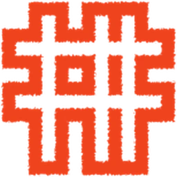

я плохо помню своё детство. почти ничего не осталось. поэтому еду туда, где четыре дня подряд его будут вспоминать.
в абрамцево, на даче, моя жена алина и её мама впервые делают музыкальную резиденцию «воздух». приезжают музыканты, живут в доме четыре дня, разбиваются на пары и пишут песни вместе. в доме оборудуют две студии. на выходе — альбом из четырёх песен.
тему каждый вытягивает жребием, на карточке. общая у всех одна — детство. она пришла из самого места: абрамцево, сказка, дача.
150 лет назад здесь уже было так. в абрамцево съехались художники, стали жить вместе, ставить спектакли, строить церковь, лепить в мастерской — и открыли новое направление в русском искусстве. сейчас на той же земле собираются музыканты, чтобы за четыре дня сделать то, чего поодиночке не сделали бы.
вокруг дома — усадьба, парк, родник, поле, храм, мастерская врубеля, избушка на курьих ножках, заповедник абрамцево. это не декорация, а то, что попадает в песни и в кадр.
мой вопрос: можно ли вернуться в детство, если ты его не помнишь. музыканты будут доставать своё и превращать в песни, я буду снимать. фильм для меня — такая же попытка вспомнить, как для них песня.
снимать буду пейзажно и живописно, наблюдением изнутри: как рождается идея, как близкие друзья за четыре дня делают общее, как из быта — еды, прогулок, разговоров в беседке — получается песня. фильм — такой же артефакт резиденции, как музыкальный альбом.